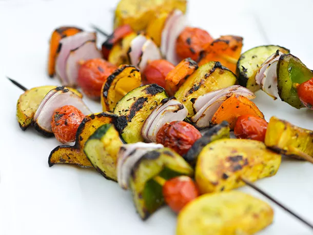

Balsamic Vegetable Skewers Recipe

Description
Balsamic vinaigrette adds a tanginess to fresh vegetables that have been skewered and grilled until lightly charred.
Ingredients
1/4 cup balsamic vinegar
1 tablespoon finely chopped parsley
1 tablespoon fresh juice from 1 lemon
2 teaspoons freshly minced garlic (about 2 medium cloves)
2 teaspoons Dijon mustard
2 teaspoons finely chopped thyme
Kosher salt and freshly ground black pepper
1 large zucchini, ends trimmed, halved lengthwise, and cut into 3/4-inch slices
1 large yellow squash, ends trimmed, halved lengthwise, and cut into 3/4-inch slices
1 large red onion, cut into 1-inch cubes and separated into 3-layer segments
2 medium red, yellow, or orange bell peppers, stemmed, seeded, and cut into 1-inch squares
1 pint grape tomatoes
- Massage kale with your hands until leaves have softened, about 2 minutes. Place in a large bowl. Add apples, pomegranate seeds, and cinnamon.
- Stir together olive oil, lemon juice, shallot, thyme, pepper, and red pepper flakes in a small bowl. Pour dressing over kale salad and toss to combine.